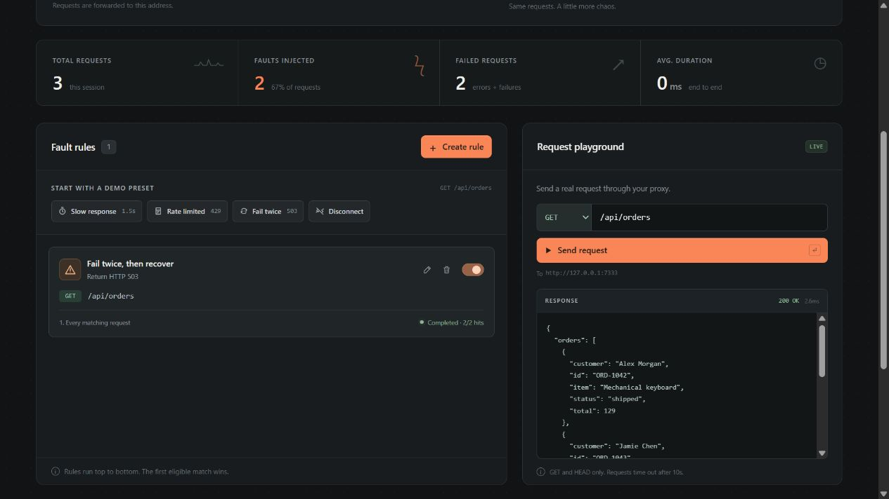

Slow it down
Check loading states and client timeouts.
This is the project overview. The working control panel runs in your Docker deployment or downloaded executable.
Deploy a real proxy in front of your development API. Add delays, errors, and dropped connections—then check how your app recovers.
Docker Compose or a single executable · Free & open source
A real proxy and control panel, on your own machine or server.
git clone https://github.com/ogrtdtghkhan-afk/faultdeck.git
cd faultdeck
cp .env.example .env2. Edit .env and set FAULTDECK_ADMIN_PASSWORD to a password of at least 12 characters. In PowerShell, use Copy-Item instead of cp.
3. Start the servicedocker compose up --build -dhttp://127.0.0.1:7331Sign in as admin with the password you configured. Set your backend URL in the control panel.
Full deployment & server access guideCheck loading states and client timeouts.
Exercise rate limits, errors, and retries.
See what happens when no response arrives.
Connect your backend, create a fault rule, and inspect real request results. Docker stores your target and rules across restarts.

Point FaultDeck at your backend, then point your client at FaultDeck. The built-in demo is optional.
Use Docker Compose above, or extract a release and start the executable:
./faultdeck.\faultdeck.exeOpen your control panel. Set the upstream target to your real backend, reachable from the FaultDeck server.
http://127.0.0.1:7331
The initial target may be the built-in demo. Replace it with your service URL and save.
Set your client’s base URL to the proxy address shown in the panel. Add X-FaultDeck-Token from your deployment configuration when required.
Create a rule for your endpoint. Make real requests from your app, then inspect the activity log. A fail-twice rule lets the third request reach your backend.
This small simulation explains the “fail twice” rule. To intercept your own app’s requests, run FaultDeck with Docker Compose or the executable above.
Connect your real backendClick to send the first simulated request.
Browser simulation only. No API requests are sent.
Try a scenario. Tell us what broke. Help shape a better development tool.